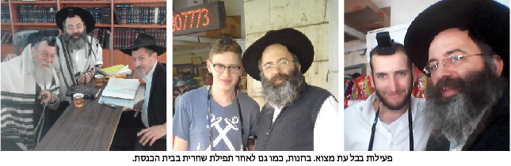

מיכאל חכימיאן
הוא גדל בלונדון באווירה ספרדית-ליטאית, עלה לארץ-ישראל והתקרב לחב”ד באופן לא צפוי ובלתי רצוני לחלוטין. כיום הוא מעמודי התווך של קהילת חב”ד בביתר עילית ומשמש כמוסד של איש אחד להפצת התורה והחסידות. בראיון לבית משיח מספר ר’ מיכאל חכימיאן על השליחות שלו ב… טמבור של השכונה הליטאית, על הפעילות שלו בקרב עוב
הוא גדל בלונדון באווירה ספרדית-ליטאית, עלה לארץ-ישראל והתקרב לחב”ד באופן לא צפוי ובלתי רצוני לחלוטין. כיום הוא מעמודי התווך של קהילת חב”ד בביתר עילית ומשמש כמוסד של איש אחד להפצת התורה והחסידות. בראיון לבית משיח מספר ר’ מיכאל חכימיאן על השליחות שלו ב… טמבור של השכונה הליטאית, על הפעילות שלו בקרב עובדי עיריית ירושלים על סכום הכסף העלום שהופקד בחשבונו ממקור בלתי מזוהה ועל הוודויים בסתר של אברכי בית וגן >> סיפורים קטנים על שליחות של איש אחד >> ופרצת ימה וקדמה צפונה ונגבה
זלמן צרפתי

“זמן קצר אחרי שהתחלתי לעשות מבצעים, נכנסתי לבנק בוקר אחד כדי לסדר משהו, והפקידה מודיעה דרך אגב שהיא שמחה שסוף סוף החשבון שלי ביתרת זכות. חשבתי בהתחלה שאולי לא שמעתי טוב, החשבון שלי היה בחובה כבר שנים רבות, למעשה מאז שעלינו לארץ ישראל. תמיד אנחנו מדשדשים אי שם בקרקעית המסגרת פעם קצת עולים מעליה ופעם צונחים תחת הקו האדום, ומיד מקבלים צלצולי אזהרה מהבנק. כיון שלא היה ידוע לי על הכנסה צפויה ההודעה של הבנקאית נשמעה לי תמוהה מאוד ואמרתי לה מיד שכנראה נפלה כאן טעות.
אבל הפקידה התעקשה, היא נכנסה שוב לנתונים שמולה ואמרה לי שנכנס לי סכום גדול בימים האחרונים שכיסה את כל המינוס ועכשיו החשבון שלנו בפלוס לראשונה מזה שנים. מאז לא הייתי במינוס כבר שלש שנים. מבחינתי זו הייתה מתנה משמים. מעולם לא ביררתי מה מקור הסכום הפתאומי שהעלה אותנו בהפתעה ממצולות החובה לצוף על פני יתרת הזכות, אבל אין לי צל של ספק שזו תוצאה ישירה של הפעילות של ה’מבצעים’ שהתחלתי לעשות.
“כתוב בחסידות שמי שמתעסק בהפצת יהדות ובקירוב יהודים לאביהם שבשמיים, הוא כמו מתווך כי הוא מתווך בין עם ישראל לקדוש ברוך הוא. ואז הקדוש ברוך הוא משלם לו ‘דמי תיווך’ או ‘דמי שדכנות’ מידו המלאה והרחבה בבני חיי ומזוני”.
בית חב”ד מהלך
על ר’ מיכאל שמעתי מכמה כיוונים. כולם סיפרו לי על יהודי שהוא בית חב”ד מהלך. חסיד שכל זמנו הפנוי והלא פנוי מוקדש למבצעים ולהפצת היהדות וזאת מבלי לשאת בשום תואר רשמי כלשהו. פשוט חסיד של הרבי.
כשביקשתי לראיין אותו, הוא לא שאל הרבה שאלות. כששאלתי אותו האם יהיה מעוניין להתראיין כדי לספר על המבצעים שלו ומתי נח לו לדבר, אחרי הכל, לא מדובר בארגון או מוסד שזקוק ליח”צ, אלא באיש פרטי ודי אנונימי. “כן, בטח”, הוא ענה מיד במבטא בריטי בולט, “אפשר עכשיו. זה חשוב, כל דבר שאפשר לעשות כדי לעודד עוד חסידים לעסוק במבצעים של הרבי”. רק אחרי כמה דקות שיחה הוא שאל אותי לאיזה עיתון זה הולך? ככה זה כשהמטרה מול העיניים, לא רואים שום דבר מסביב.
מיכאל לא נולד חסיד וגם התקרבותו לחב”ד לא הייתה מתוכננת, ובמידת מה אפילו בלתי רצויה. “אבל בסופו של דבר זה הדבר הכי טוב שקרה לנו, זה היה ממש נס” הוא אומר.
הריחוק שקירב
ר’ מיכאל יליד לונדון, בן לקהילה המשהדית הוותיקה שלה שורשים עמוקים שמקורם בפרס. משפחתו השתייכה לזרם הספרדי ליטאי ומיכאל גדל על ברכי ההשקפה הרחוקה מדרך החסידות. “בלונדון היה לי במשך זמן מה קשר קל עם ישיבת חב”ד, אך לא מעבר לכך”.
משפחת חכימיאן עלתה לארץ ישראל לפני שמונה עשרה שנה והתיישבה בעיר החרדית הסגורה ביתר עילית. הקשיים התחילו כשניסו להכניס את הילדים למוסדות החינוך. “המסגרות הטובות אותן רצינו לילדינו לא הסכימו לקבל אותנו, ואילו המסגרות שהציעו לנו ברשות המקומית לא התאימו לרמה, לסגנון ולאופי החינוכי והתורני שחיפשנו עבור ילדינו”.
משפחת חכימיאן לא וויתרה ולא הסכימה להתפשר על חינוך הילדים, המחיר ששילמה היה ילדים שנותרו בבית בלי שום מסגרת חינוכית.
“יום אחד, סיפר לי מישהו על מוסדות חב”ד בביתר עילית והציע לי לבדוק שם. יש שם גם רמה חינוכית ותורנית גבוהה, והם גם פתוחים ומקבלים יותר. בתחילה לא רצינו לשמוע. זה היה מופרך לגמרי וכלל לא בא בחשבון מבחינתנו. אבל ככל שחלף הזמן, והמוסדות אותם רצינו המשיכו בסירובם, התחלנו להשלים עם הרעיון של חב”ד. לבסוף ממש בלית ברירה ובחוסר רצון, הכנסנו את הילדים לתלמוד תורה חב”ד בביתר עילית.
מסתבר בדיעבד שזה היה הנס הגדול שלנו. לאט לאט בעקבות הילדים התחלנו להתקרב לאורו הגדול של הרבי מלך המשיח שליט”א וזכינו להתקשר באופן מלא לאילנא דחיי. מסובב כל הסיבות חשבה לטובה ומעז יצא מתוק שאין מתיקות גדולה הימנה.
נשמות שסובלות
כיום משתייך ר’ מיכאל לקהילת חב”ד בביתר עילית. הוא חלק בלתי נפרד ומעמודי התווך שבה. מידי בוקר הוא מעביר שיעור בשפה האנגלית אליו מגיעים תושבי העיר דוברי אנגלית. ר’ מיכאל הוא דמות ידועה בעיר שפועלת רבות למען הקהילה ובמיוחד למען נערים מתמודדים שמצאו עצמם מחוץ למסגרות השונות.
“את הפעילות עם הנוער התחלנו לפני שלש שנים”, מספר ר’ מיכאל, “ראיתי את הנערים, ילדים טובים, רובם מבתים טובים, שנסחפו למחוזות לא בריאים. חלקם מסתובבים ממש אבודים, בין התושבים הם היו מסומנים ומוקצים. אבל זה נשמות, נשמות אלוקיות שזועקות לעזרה. התחלתי לצאת בליל שבת, הסתובבתי ברחובות ולאט לאט התחלתי להתחבר אליהם, לנסות לקלף מעט מהשכבות שהם עטו על עצמם. ברגע שחומת האטימות נסדקה ונוצרו יחסי אימון קרובים ביננו, הסכר נפתח. התחלתי לשמוע מהם סיפורים שונים וקשים שרק הוכיחו כמה הילדים הללו סובלים”.
ר’ מיכאל הפך מהר מאוד לאוזן כרויה עבור נערי ביתר עילית, ורבים רואים בו דמות של מבוגר אחראי שמכיל אותם כפי שהם, ושאיתו הם יכולים לשוחח בפתיחות, להתייעץ ולשתף בכל מצוקות חייהם.
הייתה זו הסנונית הראשונה בפעילות עם הנוער המתמודד בביתר עילית, והסנונית הראשונה בפעילות ה’מבצעית’ של ר’ מיכאל. מאז הצטרפו והמשיכו את הפעילות עם הנוער רבים וטובים וגם עמותות וארגונים. ור’ מיכאל ממשיך לעסוק בחיות ובשמחה גם בפעילות עם הנוער וגם בפעילות שלו בירושלים.
התגלית בתחנה המרכזית
זמן קצר לאחר תחילת הפעילות עם הנוער בביתר עילית, חווה ר’ מיכאל את הסיפור שהובא בתחילת הכתבה. כאמור, מאז לא נכנס למינוס והוא מעולם לא טרח לבדוק את המקור לכסף שנכנס בהפתעה. הוא מגדיר זאת כנס ומבחינתו זו מתנת שמים כתוצאה מפעילותו עם הנוער. הסיפור הזה דרבן אותו מאוד להתחיל לעסוק במבצעים בצורה יומיומית ואינטנסיבית יותר. המיקום שנבחר לכך, היה התחנה מרכזית בירושלים.
“זה היה בתחילת הקיץ, עשיתי חשבון שאחרי שאני מסיים את העבודה יש עוד כמה שעות עד לשקיעה, והתחלתי לצאת למבצעים בתחנה המרכזית. ארגנתי שולחן קטן והתחלתי לעמוד שם כל יום. לאט לאט הדוכן נהיה בית חב”ד קטן. אנשים התחילו להכיר אותי, לשאול שאלות, להתעניין. התחנה המרכזית בירושלים היא מקום מיוחד ומרכזי מאוד. רבים עוברים שם בקביעות וכך נוצר ממש מעגל ‘לקוחות’ קבועים של דוכן התפילין, איתם התחלנו לפתח קשר רציני ועמוק יותר.
אני זוכר חוויה מיוחדת שהייתה לי פעם. סיימתי את העבודה מאוחר מהרגיל, ועשיתי חשבון שאם אצא לתחנה מרכזית, הזמן שישאר לי למבצעים עד השקיעה יהיה משהו כמו עשרים דקות. התלבטתי מאוד, כי בכל זאת מדובר בדרך ארוכה למדי, ולעשות אותה הלוך וחזור בשביל לעמוד עשרים דקות בדוכן, היה נראה לי משוגע.
בסופו של דבר החלטתי לנסוע בכל זאת. כמה דקות אחרי שאני פותח את השולחן ומקים את הדוכן, אני קולט אדם מכוסה כולו בקעקועים מביט בי ממרחק מה, בוחן אותי בהתעניינות. על פי חזותו החיצונית הוא לא היה נראה ישראלי. התחלתי לשוחח איתו, הוא סיפר ששמו ג’ו והוא מוויסקונסין שבארה”ב. שאלתי אותו האם הוא יהודי והוא ענה שהוא יודע שיש לו איזשהו קשר ליהודים, אבל לא יודע איך בדיוק. בעודנו משוחחים, התקרבה לעברנו אישה בגיל העמידה, הייתה זו אמו שטיילה יחד איתו. הבחור שאל אותה איך בדיוק אנחנו יהודים? אמא שלי הייתה יהודיה, אמרה האישה. ‘אם כך, אז אתה יהודי’! אמרתי לו וביקשתי ממנו להניח תפילין. הבחור לא סירב, ובמקום עשינו לו טקס בר מצוה כשעל הדרך חשפנו עוד משפחה יהודית שלמה. רק לחשוב איזה שידוך מוצלח בין יהודי לקב”ה יכול היה להתפספס אם הייתי חושב שחבל לבוא בשביל עשרים דקות.
בלב המעוז הליטאי
ר’ מיכאל משתדל ליישם את הכתוב ‘בכל דרכיך דעהו’ כפשוטו ומקדיש את כל עיתותיו הפנויות ושאינן למבצעים. כך הפך גם את מקום העבודה שלו לבית חב”ד של ממש. לפרנסתו עובד ר’ מיכאל כמוכר בחנות לכלי בית וחומרי בנין בלב השכונה החרדית ‘בית וגן’ בירושלים. למרות שהחנות ממוקמת בשכונה חרדית, יש לו לא מעט עבודה כ’שליח’ של נשיא הדור במסגרת עבודתו בחנות.
קודם כל, יש לי קבוע בחנות ערכת הנחת תפילין. כל לקוח או ספק שאינו שומר תורה ומצוות שנכנס לחנות, מקבל מיד הצעה אדיבה להנחת תפילין. לרוב אנשים מסכימים ומשתפים פעולה וכך אני זוכה לכה וכמה הנחות תפילין מידי יום.
ואיך בעל הבית שלך מגיב? זה לא מפריע לו?
הבעל הבית שלי הוא ליטאי מוצהר, בתחילה פחדתי והייתי עושה את זה בסתר, אחר כך הוא גילה והסתכל על זה כמשהו מוזר, אבל כשראה את ההיענות של האנשים והשמחה בה הם משתפים פעולה ומניחים תפילין, ואחרי שראה כמה מופתים מרגשים שהתגלגלו אצלו בחנות בזכות המבצעים, הוא ממש נכנס לעניינים. ופעמים רבות הוא זה שמציע בעצמו או שהוא קורא לי שאבוא להניח תפילין ללקוח או ספק.
אספר לך משהו שימחיש איך בעל הבית שלי נכנס לעניינים. אחד הסוכנים היה סרבן תפילין עיקש. למרות שגם אני וגם בעל הבית ביקשנו ממנו הרבה פעמים הוא תמיד סרב. פעם הציע לו בעל הבית שלי דיל, שאם יניח תפילין אנחנו נעשה הזמנה גדולה. הסוכן אמר שהוא מוכן בתנאי שנבצע הזמנה בסכום של לא פחות מ–10.000 ₪. במקור התכנון היה לעשות אצלו הזמנה בסכום קטן בהרבה, אולם כששמע זאת בעל הבית הגדיל את ההזמנה עד שאותו סוכן הסכים להניח תפילין. כשהניח הסוכן תפילין הוא התרגש מאוד ועבורנו הייתה זו חוויה מיוחדת. בעל הבית שלי ממש התרגש, כי אותו יהודי היה ‘אגוז קשה’ שנראה רחוק מכל העניינים. אני לא אשכח את זה בחיים.
ה’מצה של הרבי’ שפעלה ישועות
דיברת על מופתים שהתגלגלו בחנות. שתף אותנו.
בשמחה. לפני פסח אני מתרים חברים ותושבים לא חב”דניקים כאן מבית וגן, לקוחות שלנו שמכירים את הפעילות, ואני רוכש בסכום גדול מאוד מלאי ענק של שלשות מצות לליל הסדר, וכל מי שנכנס שאינו נראה כשומר תורה ומצוות, מקבל ממני שלשיית מצות. בסמוך אלינו קיים מאגר מים של ‘הגיחון’ חברת המים של ירושלים. עובדי הגיחון הם לקוחות קבועים אצלנו, כך יצא שחילקתי לכל עובדי האתר מצות שמורות לליל הסדר.
אחד העובדים שקיבל את המצות שאל האם זו סגולה לאכול מהן. אמרתי וודאי, אלו מצות מכפר חב”ד מהמאפיה שהרבי בירך, ולכן המצות הללו מבורכות. אמרתי לו שיחלק כזית מצה לכל אחד מבני הבית בליל הסדר, ובעזרת ה’ בזכות הברכה של הרבי על המצות הם יראו ישועות במשפחה. כשאמרתי את הדברים, התכונתי בשעת מעשה שיקיימו את המצווה של אכילת כזית בליל הסדר.
מספר חודשים לאחר מכן, בוקר אחד, מגיע אותו עובד לחנות ועט עלי בחיוך גדול בחיבוקים ונשיקות. שאלתי אותו מה קרה, הוא סיפר לי שיש לו בת שנשואה כבר הרבה שנים, וטרם זכתה לפרי בטן. ‘עשיתי מה שאמרת לי’, סיפר האיש, ‘בליל הסדר חילקתי לכולם כזית וגם לה, ואמרתי לכולם שבזכות המצה של הרבי מליובאוויטש תזכה בעזרת ה’ לחבוק בן עוד השנה. אתמול בלילה היו אצלנו בתי וחתני, הם באו לבשר לנו שברוך ה’ הם מצפים לבשורות טובות’. סיים כשדמעות בעיניו.
אגב, מהמצות לעובדי הגיחון החלה להתפתח פעילות שלמה בחברה. בחנוכה האחרון, הגיעו אלי כמה עובדים ושאלו מה עם חנוכה? ככה ארגנו בכל ערב הדלקת נרות חנוכה ובאחד הערבים עשינו מסיבת חנוכה ענקית לכל עובדי החברה. היה באמת משהו מיוחד.
מסתבר שזוהי רק ההתחלה. אחרי חנוכה ביקשו שנארגן שוב משהו, כך ארגנו בט”ו בשבט התוועדות אמתית עם העובדים, ובפורים שוב ארגנו מסיבת פורים ענקית עם קריאת מגילה וכל מצוות הפורים”. מצוה גוררת מצוות ומצות שמורות גוררות עוד הרבה מצוות.
הציבור צמא
אתה עובד בלב שכונה חרדית ליטאית. כיצד מגיבים בציבור הליטאי לפעילות בלב השכונה שלהם?
יש לי רק תגובות טובות וחמות. אחוז מאוד גבוה מהציבור שאני פוגש כאן קשורים או לומדים חסידות בצורה כזו או אחרת. מי בגלוי ומי בסתר. אברכים חשובים שמרגישים חופשי לדבר איתי, באים לספר לי על השיעורים שלהם בחסידות. הציבור צמא למעיינות החסידות.
לא אחת נכנסים לכאן לקוחות, אברכים ובני תורה רק כדי לשמוע משהו מהרבי. אלו יהודים של תורה והם בולעים בשקיקה כל פיסת רוחניות. ‘מיכאל, תגיד לנו איזה ווארט מהרבי’ הם מבקשים. וכשאני חוזר להם על רעיונות של הרבי, כל עניין ממלא את נפשם ממש. אתה רואה את זה בעיניים שלהם.
לפני כמה ימים נכנס לכאן אברך משי, ממש תלמיד חכם מיוחד. והוא סיפר לי בשקט שלאחרונה החל ללמוד ‘חסידות מבוארת’. “מאז שאני לומד חסידות, אני לא מצליח ללמוד שום דבר אחר, לא משנה איזה ספר אני פותח, אני חש משיכה חזקה לחסידות”. כך אמר לי.
הצלת נפשות
האם לא נוצרים וויכוחים או חילוקי דעות סביב ענייני גאולה ומשיח? או שאתה מסתיר את דעותיך..
אני לא מסתיר את דעותיי, ואדרבה, פעמים רבות אנחנו מעלים את הנושא. מיוזמתי או מיוזמתם. אבל כשזה בא אחרי הכנה, ובמילים מתאימות, אז זה מתקבל. יש לי גם מעלה שאני גם מגיע מרקע ליטאי ספרדי ואני מכיר את הגישה והסגנון כך שיותר קל לי להנגיש את המסרים הללו.
בדיוק היום אמרתי לחבר, שזכינו ברוך ה’ שיש לנו כזה אור גדול, האור של הרבי. אנחנו כל כך נהנים ממנו, מהחכמה, מהתורה, מהברכות שלו, זה טוב אלוקי שה’ נתן לנו במתנה ופשוט אסור לנו למנוע מיהודים את כל הטוב הזה. מי שמחזיק באור הזה ושומר אותו לעצמו ולא משתף אחרים, לחטא יחשב לו. אין לנו מושג מה הולך בחוץ. בציבור הכללי ובציבור החרדי. זו הצלת נפשות ממש. לפעמים חסידות שנכנסת הביתה, יכולה להציל בן אדם, ובעצם משפחה שלמה.